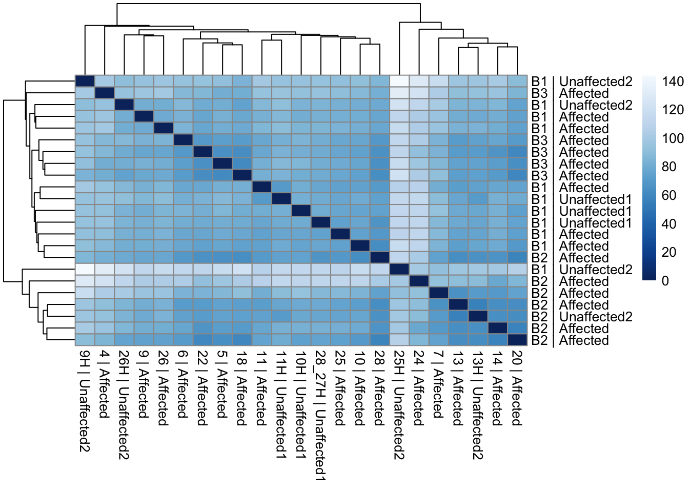
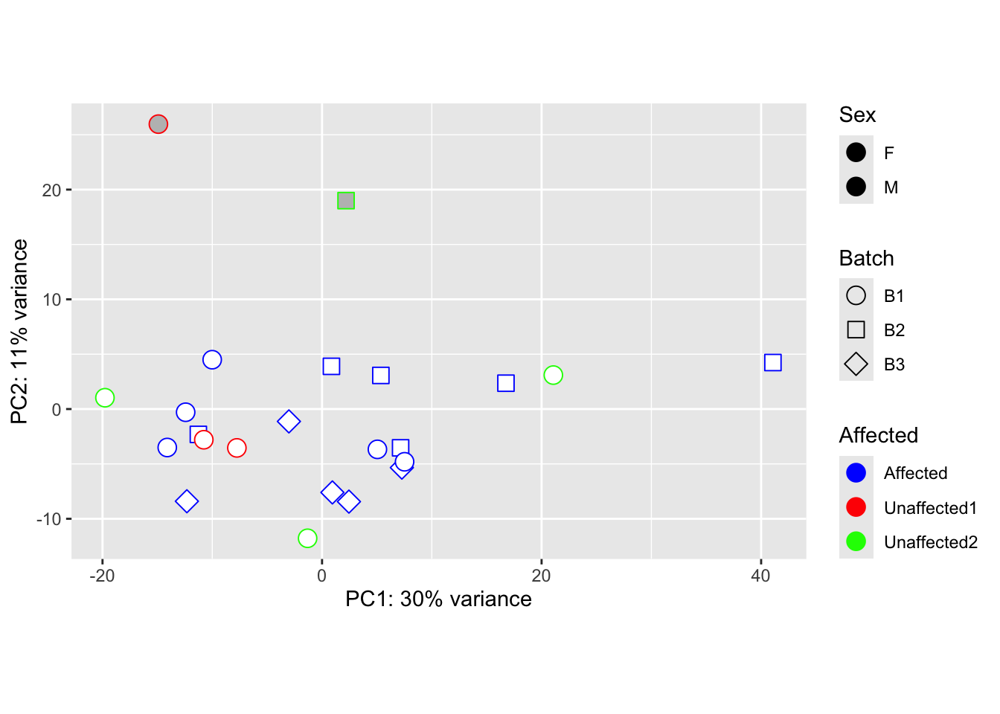
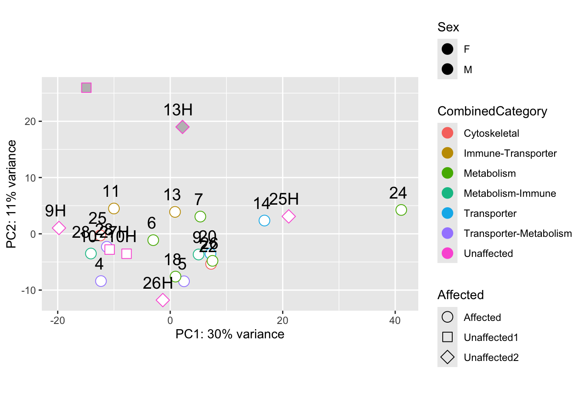
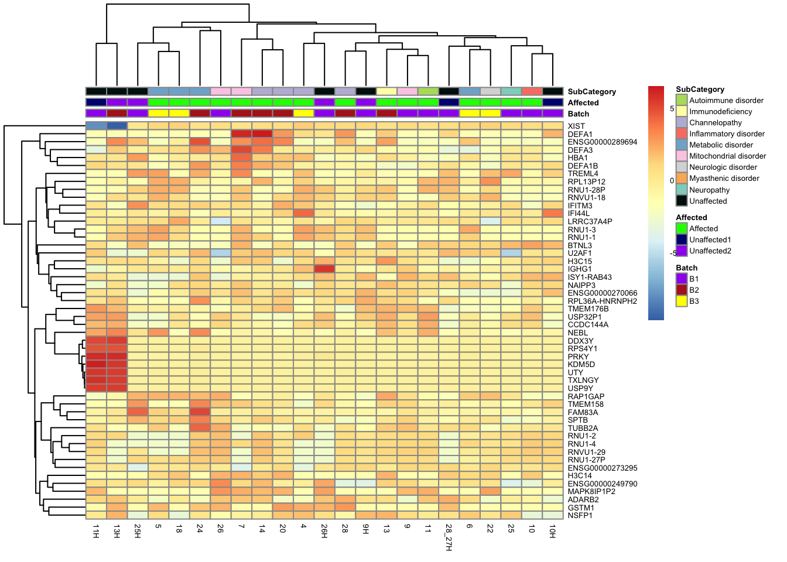
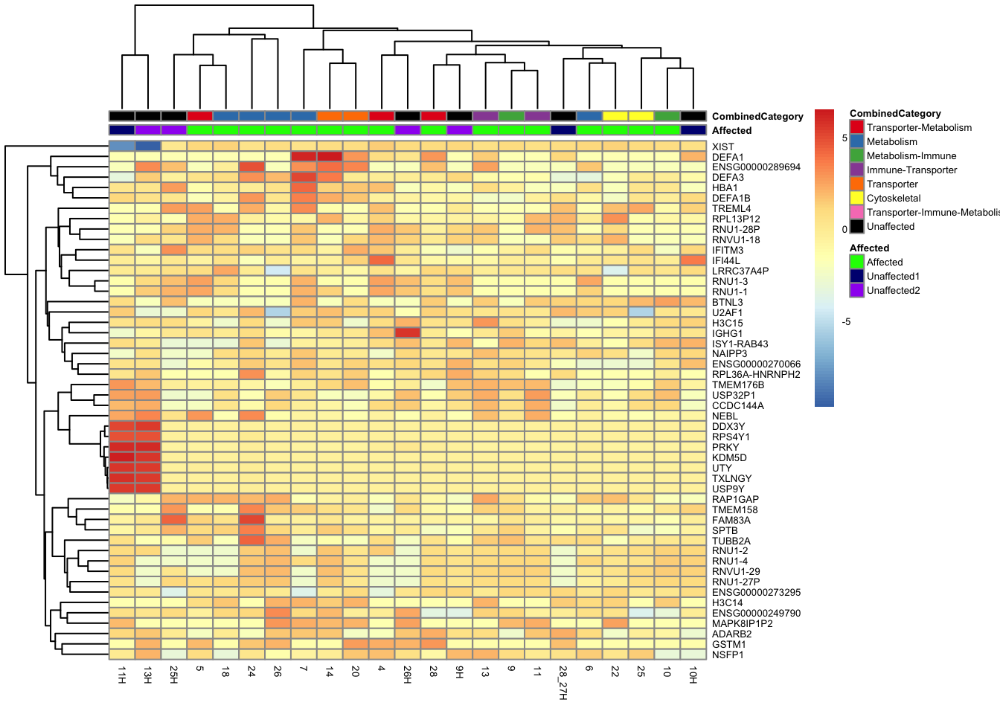
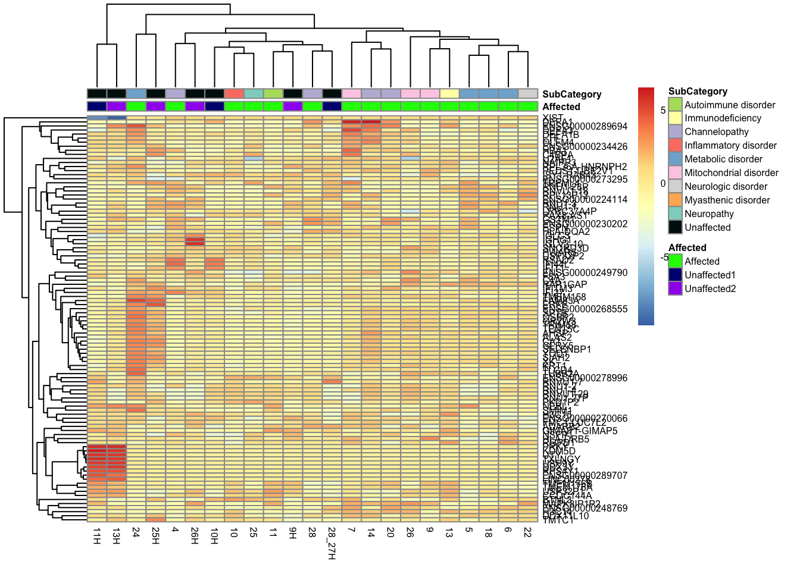
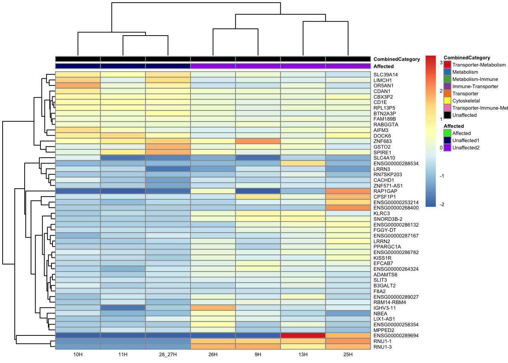
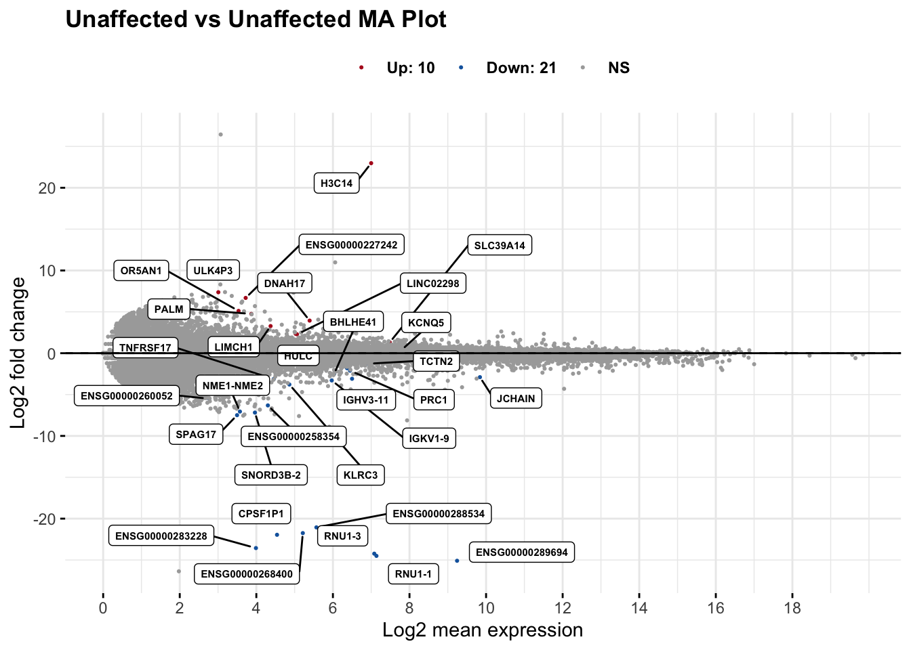

Differential Gene Expression (DGE) Analysis
Last updated: 2024-05-15
Checks: 7 0
Knit directory: mecfs-dge-analysis/
This reproducible R Markdown analysis was created with workflowr (version 1.7.1). The Checks tab describes the reproducibility checks that were applied when the results were created. The Past versions tab lists the development history.
Great! Since the R Markdown file has been committed to the Git repository, you know the exact version of the code that produced these results.
Great job! The global environment was empty. Objects defined in the global environment can affect the analysis in your R Markdown file in unknown ways. For reproduciblity it’s best to always run the code in an empty environment.
The command set.seed(20230618) was run prior to running
the code in the R Markdown file. Setting a seed ensures that any results
that rely on randomness, e.g. subsampling or permutations, are
reproducible.
Great job! Recording the operating system, R version, and package versions is critical for reproducibility.
Nice! There were no cached chunks for this analysis, so you can be confident that you successfully produced the results during this run.
Great job! Using relative paths to the files within your workflowr project makes it easier to run your code on other machines.
Great! You are using Git for version control. Tracking code development and connecting the code version to the results is critical for reproducibility.
The results in this page were generated with repository version 8e3ad2a. See the Past versions tab to see a history of the changes made to the R Markdown and HTML files.
Note that you need to be careful to ensure that all relevant files for
the analysis have been committed to Git prior to generating the results
(you can use wflow_publish or
wflow_git_commit). workflowr only checks the R Markdown
file, but you know if there are other scripts or data files that it
depends on. Below is the status of the Git repository when the results
were generated:
Ignored files:
Ignored: .DS_Store
Ignored: .Rhistory
Ignored: .Rproj.user/
Ignored: analysis/.DS_Store
Ignored: data/.DS_Store
Ignored: omnipathr-log/
Ignored: output/.DS_Store
Ignored: output/batch-correction-limma/
Ignored: output/check-controls.RData
Ignored: output/condition-analysis.RData
Ignored: output/subsetted-condition-analysis.RData
Ignored: renv/library/
Untracked files:
Untracked: output/counts_vst_limma_unaff.csv
Untracked: output/counts_vst_subsetted..csv
Untracked: output/counts_vst_subsetted.csv
Untracked: output/counts_vst_unaff.csv
Untracked: output/enrichr-dbs/
Untracked: output/res_aff_vs_unaff_df_sub_genename_padj05.csv
Untracked: output/res_unaff_vs_unaff_df_sub_genename.csv
Untracked: output/res_unaff_vs_unaff_df_sub_genename_05.csv
Untracked: output/res_unaff_vs_unaff_df_sub_genename_padj1.csv
Untracked: output/res_unaff_vs_unaff_significant_subsetted_mygene.csv
Untracked: output/res_unaff_vs_unaff_significant_subsetted_samples.csv
Untracked: output/res_unaff_vs_unaff_sub.csv
Unstaged changes:
Modified: README.md
Modified: analysis/batch-analysis.Rmd
Modified: analysis/complex-upset.Rmd
Modified: analysis/condition-analysis.Rmd
Modified: analysis/subsetted-condition-analysis.Rmd
Modified: output/bysample_upset.png
Modified: output/counts_vst.csv
Modified: output/counts_vst_female.csv
Modified: output/counts_vst_limma.csv
Modified: output/counts_vst_limma_female.csv
Note that any generated files, e.g. HTML, png, CSS, etc., are not included in this status report because it is ok for generated content to have uncommitted changes.
These are the previous versions of the repository in which changes were
made to the R Markdown (analysis/check-controls.Rmd) and
HTML (docs/check-controls.html) files. If you’ve configured
a remote Git repository (see ?wflow_git_remote), click on
the hyperlinks in the table below to view the files as they were in that
past version.
| File | Version | Author | Date | Message |
|---|---|---|---|---|
| Rmd | 8e3ad2a | sdhutchins | 2024-05-15 | wflow_publish(files = "analysis/check-controls.Rmd") |
| html | 87186be | sdhutchins | 2024-04-23 | Build site. |
| Rmd | 1783014 | sdhutchins | 2024-04-23 | workflowr::wflow_publish(files = "analysis/check-controls.Rmd") |
| html | 77caa99 | sdhutchins | 2024-04-23 | Build site. |
| Rmd | 5de09e7 | sdhutchins | 2024-04-23 | workflowr::wflow_publish(files = "analysis/check-controls.Rmd") |
DGE Analysis Setup
Ensure you have all necessary libraries installed and load the helper code.
renv will is integrated to ensure reproducibility of
this analysis.
Use the below code to install these packages:
# You must clone the github repository to do this.
renv::restore()library(tidyverse) # Available via CRAN
library(DESeq2) # Available via Bioconductor
library(RColorBrewer) # Available via CRAN
library(pheatmap) # Available via CRAN
library(genefilter) # Available via Bioconductor
library(limma) # Available via Bioconductor
library(gprofiler2) # Available via CRAN
library(biomaRt) # Available via Bioconductor
library(plotly) # Available via CRAN
library(ggpubr)
library(rmarkdown)
library(ggupset)
library(clusterProfiler)
library(DOSE)
library(org.Hs.eg.db) # Available via Bioconductor
library(UpSetR)
library(ggrepel)
library(ReactomePA)Data Import
We will be importing counts data from the star-salmon pipeline and our metadata for the project which is hosted on Box. This also ensures data is properly ordered by sample id.
counts <- read_tsv("data/star-salmon/salmon.merged.gene_counts_length_scaled.tsv")
# Import variants of interest
genes_of_interest <- read_csv("data/Prioritized_Genes_From_WGS_2024_04_25.csv")
genes_of_interest <- unique(genes_of_interest$Genes)
genes_of_interest <- genes_of_interest[!is.na(genes_of_interest)]
# Use first column (gene_id) for row names
counts <- data.frame(counts, row.names = 1)
counts$Ensembl_ID <- row.names(counts)
drop <- c("Ensembl_ID", "gene_name")
gene_info <- counts[, drop]
counts <- counts[, !(names(counts) %in% drop)] # remove both columns
# Import metadata
sample_metadata <- read_csv("data/check_controls.csv")
row.names(sample_metadata) <- sample_metadata$ID
# Assuming counts is your counts dataframe and sample_metadata is your metadata dataframe
# Call the function with the appropriate column names
counts <- rename_counts_columns(counts, sample_metadata, "ID", "RNA_Samples_id")
# Check that data is ordered properly
sample_metadata <- check_order(sample_metadata = sample_metadata, counts = counts)
genes_biomart <- retrieve_gene_info(values = gene_info$Ensembl_ID, filters = "ensembl_gene_id_version")DESeq2 Analysis
sample_metadata$Family <- factor(sample_metadata$Family)
sample_metadata$Affected <- factor(sample_metadata$Affected)
sample_metadata$Batch <- factor(sample_metadata$Batch)
sample_metadata$Sex <- factor(sample_metadata$Sex)
sample_metadata$Ancestry <- factor(sample_metadata$Ancestry)
sample_metadata$SubCategory <- factor(sample_metadata$SubCategory)
sample_metadata$CombinedCategory <- factor(sample_metadata$CombinedCategory)
# Account for Family later but batch is accounted for
# Accounting for another factor seems to be an issue.
dds <- DESeqDataSetFromMatrix(
countData = round(counts), colData = sample_metadata,
design = ~ Affected
)
# Pre-filtering: Keep only rows that have at least 10 reads total
keep <- rowSums(counts(dds)) >= 10
dds <- dds[keep, ]
# Remove samples from family's with multiple samples
remove_multiple_fam <- c("8", "12", "19", "21", "23", "27")
# Create a logical vector to index the columns you want to keep
kept_fam_members <- !(colnames(dds) %in% remove_multiple_fam)
dds <- dds[, kept_fam_members]
# Run DESeq function
dds <- DESeq(dds)
# Normalize gene counts for differences in seq. depth/global differences
counts_norm <- counts(dds, normalized = TRUE)Data transformation and visualization
Perform count data transformation by variance stabilizing transformation (vst) on normalized counts.
vsd <- vst(dds, blind = FALSE)Batch correction with limma
counts_vst <- assay(vsd)
write.csv(counts_vst, file = "output/counts_vst_unaff.csv")
mm <- model.matrix(~ Batch + Affected, colData(vsd))
counts_vst_limma <- limma::removeBatchEffect(counts_vst, batch = vsd$Batch,
design = mm)Coefficients not estimable: batch1 batch2 write.csv(counts_vst_limma, file = "output/counts_vst_limma_unaff.csv")
vsd_limma <- vsd
assay(vsd_limma) <- counts_vst_limmaSample distances heatmap
sample_dists_all <- dist(t(assay(vsd_limma)))
sample_dist_matrix_all <- as.matrix(sample_dists_all)
rownames(sample_dist_matrix_all) <- paste(vsd_limma$Batch, vsd_limma$Affected,
sep = " | ")
colnames(sample_dist_matrix_all) <- paste(vsd_limma$ID, vsd_limma$Affected,
sep = " | ")
colors <- colorRampPalette(rev(brewer.pal(9, "Blues")))(255)
pheatmap(sample_dist_matrix_all, clustering_distance_rows = sample_dists_all,
clustering_distance_cols = sample_dists_all, col = colors)
| Version | Author | Date |
|---|---|---|
| 77caa99 | sdhutchins | 2024-04-23 |
Principal Components Analysis
pca_data_all <- plotPCA(vsd_limma, intgroup = c("Batch", "Affected", "Sex"),
returnData = TRUE)
percent_var_all <- round(100 * attr(pca_data_all, "percentVar"))
ggplot(pca_data_all, aes(PC1, PC2)) +
geom_point(aes(colour = Affected, fill = Sex, shape = Batch), size = 4) +
scale_shape_manual(values = c(21, 22, 23)) +
scale_fill_manual(values = c("white", "gray")) +
scale_color_manual(values = c("blue", "red", "green")) +
geom_text(aes(label = name),
data = subset(pca_data_all, PC2 < -18 | PC1 < -30),
vjust = -1, hjust = 0.5, size = 2.5
) +
xlab(paste0("PC1: ", percent_var_all[1], "% variance")) +
ylab(paste0("PC2: ", percent_var_all[2], "% variance")) +
coord_fixed()
| Version | Author | Date |
|---|---|---|
| 77caa99 | sdhutchins | 2024-04-23 |
pca_data_all <- plotPCA(vsd_limma, intgroup = c("Affected", "Sex",
"CombinedCategory"),
returnData = TRUE)
percent_var_all <- round(100 * attr(pca_data_all, "percentVar"))
ggplot(pca_data_all, aes(PC1, PC2)) +
geom_point(aes(colour = CombinedCategory, fill = Sex, shape = Affected), size = 4) +
scale_shape_manual(values = c(21, 22, 23)) +
scale_fill_manual(values = c("white", "gray")) +
geom_text(aes(label = name), vjust = -1, hjust = 0.65, size = 5) +
# geom_text_repel(aes(label = name), size = 5, vjust = -1, hjust = -0.65) +
xlab(paste0("PC1: ", percent_var_all[1], "% variance")) +
ylab(paste0("PC2: ", percent_var_all[2], "% variance")) +
coord_fixed()
| Version | Author | Date |
|---|---|---|
| 77caa99 | sdhutchins | 2024-04-23 |
pca_data <- plotPCA(vsd_limma, intgroup = c("Sex", "Affected"), returnData = TRUE)
percent_var <- round(100 * attr(pca_data, "percentVar"))
ggplot(pca_data, aes(PC1, PC2)) +
geom_point(aes(shape = Sex, colour = Affected), size = 5) +
scale_color_manual(
values = c("blue", "red", "purple"),
name = "Affected Status",
labels = c("Affected", "Unaffected1", "Unaffected2")
) +
scale_shape_manual(
name = "Sex",
labels = c("Female", "Male"),
values = c(16, 17)
) + # Example shapes, change as needed
geom_text_repel(aes(label = name), size = 5, vjust = -2, hjust = -0.65) +
xlab(paste0("PC1: ", percent_var[1], "% variance")) +
ylab(paste0("PC2: ", percent_var[2], "% variance")) +
coord_fixed()
| Version | Author | Date |
|---|---|---|
| 77caa99 | sdhutchins | 2024-04-23 |
pca_data_all <- plotPCA(vsd_limma, intgroup = c("CombinedCategory"),
returnData = TRUE)
percent_var_all <- round(100 * attr(pca_data_all, "percentVar"))
ggplot(pca_data_all, aes(PC1, PC2)) +
geom_point(aes(colour = CombinedCategory), size = 5) +
scale_colour_manual(
values = c(
"#B3DE69", "#FFFFB3", "#BEBADA", "#FB8072", "#80B1D3",
"#FCCDE5", "#8DD3C7", "#000000"
),
name = "Category"
) +
# geom_text(aes(label = name), vjust = -.75, hjust = -.5, size = 3) +
# geom_text_repel(aes(label = name), size = 5, vjust = -2, hjust = -0.65) +
geom_text_repel(aes(label = name), size = 3) +
xlab(paste0("PC1: ", percent_var_all[1], "% variance")) +
ylab(paste0("PC2: ", percent_var_all[2], "% variance")) +
ggthemes::theme_clean()
| Version | Author | Date |
|---|---|---|
| 77caa99 | sdhutchins | 2024-04-23 |
Heatmap of all genes, top 50 & top 100 genes
# Specify annotation colors by columns
# Use RColorBrewer::brewer.pal(n=10, name="Set1")
category_colors <- c(
"Autoimmune disorder" = "#B3DE69",
"Immunodeficiency" = "#FFFFB3",
"Channelopathy" = "#BEBADA",
"Inflammatory disorder" = "#FB8072",
"Metabolic disorder" = "#80B1D3",
"Mitochondrial disorder" = "#FCCDE5",
"Neurologic disorder" = "#D9D9D9",
"Myasthenic disorder" = "#FDB462",
"Neuropathy" = "#8DD3C7",
"Unaffected" = "#001111"
)
combined_category_colors <- c(
"Transporter-Metabolism" = "#E41A1C", # Dark green
"Metabolism" = "#377EB8", # Dark orange
"Metabolism-Immune" = "#4DAF4A", # Light purple
"Immune-Transporter" = "#984EA3", # Magenta
"Transporter" = "#FF7F00", # Light green
"Cytoskeletal" = "#FFFF33", # Mustard yellow
"Transporter-Immune-Metabolism" = "#F781BF", # Brown
"Unaffected" = "#000000" # Dark grey
)
# Specify colors
ann_colors <- list(
Batch = c(B1 = "purple", B2 = "firebrick", B3 = "yellow"),
Affected = c(Affected = "green", Unaffected1 = "navy", Unaffected2 = "purple"),
SubCategory = category_colors,
CombinedCategory = combined_category_colors
)
ann_colors2 <- list(
Batch = c(B1 = "purple", B2 = "firebrick", B3 = "yellow"),
Affected = c(Affected = "green", Unaffected1 = "navy", Unaffected2 = "purple"),
SubCategory = category_colors,
CombinedCategory = combined_category_colors
)This is a heatmap of the top 50 genes with the highest variance across samples
top_var_genes <- head(order(-rowVars(assay(vsd_limma))), 50)
mat <- assay(vsd_limma)[top_var_genes, ]
mat <- mat - rowMeans(mat)
df <- as.data.frame(colData(vsd_limma)[, c("Batch", "Affected", "CombinedCategory")])
ensembl_to_gene <- setNames(gene_info$gene_name, gene_info$Ensembl_ID)
# Get the current row names of the matrix 'mat'
current_ensembl_ids <- rownames(mat)
# Find the corresponding gene names for the Ensembl IDs
new_row_names <- ensembl_to_gene[current_ensembl_ids]
# Set the new row names for the matrix 'mat'
rownames(mat) <- new_row_names
ComplexHeatmap::pheatmap(mat,
annotation_col = df, annotation_colors = ann_colors2,
fontsize = 5, angle_col = c("0")
)
| Version | Author | Date |
|---|---|---|
| 77caa99 | sdhutchins | 2024-04-23 |
This is a heatmap of the top 50 genes with the highest variance across all samples.
top_var_genes_all <- head(order(-rowVars(assay(vsd_limma))), 50)
mat_all <- assay(vsd_limma)[top_var_genes_all, ]
mat_all <- mat_all - rowMeans(mat_all)
df_all <- as.data.frame(colData(vsd_limma)[, c("Batch", "Affected", "SubCategory")])
df_affcat <- as.data.frame(colData(vsd_limma)[, c("Affected", "CombinedCategory")])
ensembl_to_gene <- setNames(gene_info$gene_name, gene_info$Ensembl_ID)
# Get the current row names of the matrix 'mat'
current_ensembl_ids_all <- rownames(mat_all)
# Find the corresponding gene names for the Ensembl IDs
new_row_names_all <- ensembl_to_gene[current_ensembl_ids_all]
# Set the new row names for the matrix 'mat'
rownames(mat_all) <- new_row_names_all
pheatmap(mat_all, annotation_col = df_all, annotation_colors = ann_colors,
fontsize = 5)
| Version | Author | Date |
|---|---|---|
| 77caa99 | sdhutchins | 2024-04-23 |
pheatmap(mat_all, annotation_col = df_affcat, annotation_colors = ann_colors2,
fontsize = 5)
| Version | Author | Date |
|---|---|---|
| 77caa99 | sdhutchins | 2024-04-23 |
This is a heatmap of the top 100 genes with the highest variance across
top_var_genes_100_all <- head(order(-rowVars(assay(vsd_limma))), 100)
mat_100_all <- assay(vsd_limma)[top_var_genes_100_all, ]
mat_100_all <- mat_100_all - rowMeans(mat_100_all)
df_100_all <- as.data.frame(colData(vsd_limma)[, c("Affected", "SubCategory")])
ensembl_to_gene <- setNames(gene_info$gene_name, gene_info$Ensembl_ID)
# Get the current row names of the matrix 'mat'
current_ensembl_ids_100_all <- rownames(mat_100_all)
# Find the corresponding gene names for the Ensembl IDs
new_row_names_100_all <- ensembl_to_gene[current_ensembl_ids_100_all]
# Set the new row names for the matrix 'mat'
rownames(mat_100_all) <- new_row_names_100_all
pheatmap(mat_100_all, annotation_col = df_100_all,
annotation_colors = ann_colors2, fontsize = 6)
| Version | Author | Date |
|---|---|---|
| 77caa99 | sdhutchins | 2024-04-23 |
Comparison/Contrast of Unaffected Groups
res_unaff_vs_unaff_sub <- results(dds, contrast = c("Affected", "Unaffected1", "Affected"))
res_unaff_vs_unaff_df_sub <- process_and_save_results(
res_unaff_vs_unaff_sub,
"output/res_unaff_vs_unaff_sub.csv"
)
res_unaff_vs_unaff_df_sub <- arrange(res_unaff_vs_unaff_df_sub, padj)
res_unaff_vs_unaff_df_05_sub <- subset(res_unaff_vs_unaff_df_sub, padj < 0.05)
res_unaff_vs_unaff_df_1_sub <- subset(res_unaff_vs_unaff_df_sub, padj < 0.1)
summary(res_unaff_vs_unaff_sub)
out of 29608 with nonzero total read count
adjusted p-value < 0.1
LFC > 0 (up) : 28, 0.095%
LFC < 0 (down) : 70, 0.24%
outliers [1] : 292, 0.99%
low counts [2] : 6818, 23%
(mean count < 3)
[1] see 'cooksCutoff' argument of ?results
[2] see 'independentFiltering' argument of ?resultstopgenes_byensemblid_sub <- head(rownames(res_unaff_vs_unaff_df_sub), 98)
topgenes_unaff_vs_unaff_05_sub <- assay(vsd_limma)[topgenes_byensemblid_sub, ]
topgenes_unaff_vs_unaff_05_sub <- topgenes_unaff_vs_unaff_05_sub - rowMeans(topgenes_unaff_vs_unaff_05_sub)
keep_controls <- c("11H", "10H", "13H", "26H", "28_27H", "9H", "25H")
ensembl_to_gene_sub <- setNames(gene_info$gene_name, gene_info$Ensembl_ID)
# Get the current row names of the matrix 'mat'
current_ensembl_ids_sub <- rownames(topgenes_unaff_vs_unaff_05_sub)
# Find the corresponding gene names for the Ensembl IDs
new_row_names_sub <- ensembl_to_gene_sub[current_ensembl_ids_sub]
# Set the new row names for the matrix 'mat'
rownames(topgenes_unaff_vs_unaff_05_sub) <- new_row_names_sub
topgenes_unaff_vs_unaff_05_sub <- topgenes_unaff_vs_unaff_05_sub[order(row.names(topgenes_unaff_vs_unaff_05_sub)), ]
df_sub <- as.data.frame(colData(vsd_limma)[, c("Affected", "CombinedCategory")])
#df_sub <- df_sub[rownames(df_sub) %in% keep_controls, ]
#topgenes_unaff_vs_unaff_05_sub <- topgenes_unaff_vs_unaff_05_sub[ ,keep_controls]
pheatmap(topgenes_unaff_vs_unaff_05_sub, annotation_col = df_sub, annotation_colors = ann_colors2, fontsize = 5, angle_col = c("0"))
topgenes_byensemblid_sub <- head(rownames(res_unaff_vs_unaff_df_sub), 50)
topgenes_unaff_vs_unaff_05_sub <- assay(vsd_limma)[topgenes_byensemblid_sub, ]
topgenes_unaff_vs_unaff_05_sub <- topgenes_unaff_vs_unaff_05_sub - rowMeans(topgenes_unaff_vs_unaff_05_sub)
keep_controls <- c("11H", "10H", "13H", "26H", "28_27H", "9H", "25H")
ensembl_to_gene_sub <- setNames(gene_info$gene_name, gene_info$Ensembl_ID)
# Get the current row names of the matrix 'mat'
current_ensembl_ids_sub <- rownames(topgenes_unaff_vs_unaff_05_sub)
# Find the corresponding gene names for the Ensembl IDs
new_row_names_sub <- ensembl_to_gene_sub[current_ensembl_ids_sub]
# Set the new row names for the matrix 'mat'
rownames(topgenes_unaff_vs_unaff_05_sub) <- new_row_names_sub
topgenes_unaff_vs_unaff_05_sub <- topgenes_unaff_vs_unaff_05_sub[order(row.names(topgenes_unaff_vs_unaff_05_sub)), ]
df_sub <- as.data.frame(colData(vsd_limma)[, c("Affected", "CombinedCategory")])
df_sub <- df_sub[rownames(df_sub) %in% keep_controls, ]
topgenes_unaff_vs_unaff_05_sub <- topgenes_unaff_vs_unaff_05_sub[ ,keep_controls]
pheatmap(topgenes_unaff_vs_unaff_05_sub, annotation_col = df_sub, annotation_colors = ann_colors2, fontsize = 5, angle_col = c("0"))
gb_df <- genes_biomart[, c(1, ncol(genes_biomart))]
res_unaff_vs_unaff_df_sub_genename <- res_unaff_vs_unaff_df_sub
res_unaff_vs_unaff_df_sub_genename$Ensembl_ID <- row.names(res_unaff_vs_unaff_df_sub)
res_unaff_vs_unaff_df_sub_genename <- merge(x = res_unaff_vs_unaff_df_sub_genename, y = gene_info, by.x = "Ensembl_ID", by.y = "Ensembl_ID", all.x = TRUE)
res_unaff_vs_unaff_df_sub_genename <- res_unaff_vs_unaff_df_sub_genename[, c(dim(res_unaff_vs_unaff_df_sub_genename)[2], 1:dim(res_unaff_vs_unaff_df_sub_genename)[2] - 1)]
res_unaff_vs_unaff_df_sub_genename <- res_unaff_vs_unaff_df_sub_genename[order(res_unaff_vs_unaff_df_sub_genename[, "padj"]), ]
write.csv(res_unaff_vs_unaff_df_sub_genename, file = "output/res_unaff_vs_unaff_df_sub_genename.csv")res_unaff_vs_unaff_df_genename_05 <- subset(res_unaff_vs_unaff_df_sub_genename, padj < 0.05)
res_unaff_vs_unaff_df_genename_05 <- res_unaff_vs_unaff_df_genename_05[order(res_unaff_vs_unaff_df_genename_05$padj), ]
write.csv(res_unaff_vs_unaff_df_genename_05, file = "output/res_unaff_vs_unaff_df_sub_genename_05.csv")
res_unaff_vs_unaff_df_genename_1 <- subset(res_unaff_vs_unaff_df_sub_genename, padj < 0.1)
res_unaff_vs_unaff_df_genename_1 <- res_unaff_vs_unaff_df_genename_1[order(res_unaff_vs_unaff_df_genename_1$padj), ]
write.csv(res_unaff_vs_unaff_df_genename_1, file = "output/res_unaff_vs_unaff_df_sub_genename_padj1.csv")Below is a table of information about the top genes.
library(mygene)
genes <- res_unaff_vs_unaff_df_genename_05$gene_name
my_gene_data <- queryMany(genes, scopes = "symbol", fields = c("symbol", "name", "summary", species = "human"))Finished
Pass returnall=TRUE to return lists of duplicate or missing query terms.my_gene_data_unique <- as.data.frame(my_gene_data) %>% dplyr::distinct(query, .keep_all = TRUE)
# paged_table(my_gene_data, options = list(rows.print = 15))filtered_gene_names <- res_unaff_vs_unaff_df_sub_genename$gene_name[!grepl("^ENS", res_unaff_vs_unaff_df_sub_genename$gene_name)]
# Select specific genes to show
# set top = 0, then specify genes using label.select argument
maplot <- ggmaplot(res_unaff_vs_unaff_df_sub,
main = "Unaffected vs Unaffected MA Plot",
fdr = .05, fc = 1, size = 0.4, # Same used for others.
genenames = as.vector(res_unaff_vs_unaff_df_sub_genename$gene_name),
ggtheme = ggplot2::theme_minimal(),
legend = "top", top = 30,
label.select = c("KCNQ5"),
font.label = c("bold", 6), label.rectangle = TRUE,
font.legend = "bold", font.main = "bold"
)
maplot
significant_data <- maplot$data %>%
filter(grepl("Up|Down", sig)) %>%
mutate(direction = ifelse(grepl("Up", sig), "Up", "Down")) %>%
dplyr::select(-sig) # This removes the 'sig' column
# Combine DataFrames based on matching 'query' in my_gene_data_unique to 'gene' in significant_data
combined_data <- inner_join(my_gene_data_unique, significant_data, by = c("query" = "name"))
combined_data <- combined_data %>%
dplyr::select(-notfound, -X_id, -X_score) %>%
rename(gene = query)
paged_table(as.data.frame(significant_data), options = list(rows.print = 30))# Save significant genes
write.csv(significant_data, file = "output/res_unaff_vs_unaff_significant_subsetted_samples.csv", row.names = FALSE)
# Save significant genes
write.csv(combined_data, file = "output/res_unaff_vs_unaff_significant_subsetted_mygene.csv", row.names = FALSE)Expression of Candidate Genes
Below is a table of expression of the genes identified during our WGS analysis.
# Subset gene_info using genes of interest
subset_gene_info <- gene_info[gene_info$gene_name %in% genes_of_interest, ]
filtered_by_interest <- filter(res_unaff_vs_unaff_df_sub_genename, Ensembl_ID %in% subset_gene_info$Ensembl_ID)
# Filtering the dataframe by row names
filtered_counts <- counts[row.names(counts) %in% subset_gene_info$Ensembl_ID, ]
# Match and update row names
matching_indices <- match(rownames(filtered_counts), subset_gene_info$Ensembl_ID)
# Update row names based on matching_column values from metadata
rownames(filtered_counts) <- subset_gene_info$gene_name[matching_indices]
missing_genes <- setdiff(subset_gene_info$Ensembl_ID, filtered_by_interest$Ensembl_ID)
corresponding_gene_names <- subset_gene_info$gene_name[subset_gene_info$Ensembl_ID %in% missing_genes]
missing_gene_counts <- counts[row.names(counts) %in% missing_genes, ]
paged_table(filtered_by_interest, options = list(rows.print = 15))paged_table(filtered_counts, options = list(rows.print = 15))Save data
save.image(file = "output/check-controls.RData")
sessionInfo()R version 4.3.2 (2023-10-31)
Platform: x86_64-apple-darwin20 (64-bit)
Running under: macOS Sonoma 14.4.1
Matrix products: default
BLAS: /Library/Frameworks/R.framework/Versions/4.3-x86_64/Resources/lib/libRblas.0.dylib
LAPACK: /Library/Frameworks/R.framework/Versions/4.3-x86_64/Resources/lib/libRlapack.dylib; LAPACK version 3.11.0
locale:
[1] en_US.UTF-8/en_US.UTF-8/en_US.UTF-8/C/en_US.UTF-8/en_US.UTF-8
time zone: America/Chicago
tzcode source: internal
attached base packages:
[1] stats4 stats graphics grDevices datasets utils methods
[8] base
other attached packages:
[1] mygene_1.36.0 GenomicFeatures_1.52.2
[3] ReactomePA_1.44.0 ggrepel_0.9.5
[5] UpSetR_1.4.0 org.Hs.eg.db_3.17.0
[7] AnnotationDbi_1.62.2 DOSE_3.26.2
[9] clusterProfiler_4.8.3 ggupset_0.3.0.9002
[11] rmarkdown_2.26 ggpubr_0.6.0
[13] plotly_4.10.4 biomaRt_2.56.1
[15] gprofiler2_0.2.3 limma_3.56.2
[17] genefilter_1.82.1 pheatmap_1.0.12
[19] RColorBrewer_1.1-3 DESeq2_1.40.2
[21] SummarizedExperiment_1.30.2 Biobase_2.60.0
[23] MatrixGenerics_1.12.3 matrixStats_1.2.0
[25] GenomicRanges_1.52.1 GenomeInfoDb_1.36.4
[27] IRanges_2.34.1 S4Vectors_0.38.2
[29] BiocGenerics_0.46.0 lubridate_1.9.3
[31] forcats_1.0.0 stringr_1.5.1
[33] dplyr_1.1.4 purrr_1.0.2
[35] readr_2.1.5 tidyr_1.3.1
[37] tibble_3.2.1 ggplot2_3.5.0
[39] tidyverse_2.0.0 workflowr_1.7.1
loaded via a namespace (and not attached):
[1] fs_1.6.3 bitops_1.0-7 enrichplot_1.20.3
[4] HDO.db_0.99.1 httr_1.4.7 doParallel_1.0.17
[7] tools_4.3.2 backports_1.4.1 utf8_1.2.4
[10] R6_2.5.1 lazyeval_0.2.2 GetoptLong_1.0.5
[13] withr_3.0.0 graphite_1.46.0 prettyunits_1.2.0
[16] gridExtra_2.3 cli_3.6.2 scatterpie_0.2.1
[19] labeling_0.4.3 sass_0.4.8 Rsamtools_2.16.0
[22] yulab.utils_0.1.4 foreign_0.8-86 gson_0.1.0
[25] rstudioapi_0.15.0 RSQLite_2.3.5 BiocIO_1.10.0
[28] generics_0.1.3 gridGraphics_0.5-1 shape_1.4.6.1
[31] vroom_1.6.5 car_3.1-2 GO.db_3.17.0
[34] Matrix_1.6-5 fansi_1.0.6 abind_1.4-5
[37] lifecycle_1.0.4 whisker_0.4.1 yaml_2.3.8
[40] carData_3.0-5 qvalue_2.32.0 BiocFileCache_2.11.1
[43] grid_4.3.2 blob_1.2.4 promises_1.2.1
[46] crayon_1.5.2 lattice_0.22-5 cowplot_1.1.3
[49] annotate_1.78.0 KEGGREST_1.40.1 pillar_1.9.0
[52] knitr_1.45 ComplexHeatmap_2.16.0 fgsea_1.26.0
[55] rjson_0.2.21 codetools_0.2-19 fastmatch_1.1-4
[58] glue_1.7.0 getPass_0.2-4 downloader_0.4
[61] ggfun_0.1.4 data.table_1.15.2 vctrs_0.6.5
[64] png_0.1-8 treeio_1.24.3 gtable_0.3.4
[67] gsubfn_0.7 cachem_1.0.8 xfun_0.42
[70] S4Arrays_1.0.6 tidygraph_1.3.1 survival_3.5-8
[73] iterators_1.0.14 nlme_3.1-164 ggtree_3.8.2
[76] bit64_4.0.5 progress_1.2.3 filelock_1.0.3
[79] rprojroot_2.0.4 bslib_0.6.1 rpart_4.1.23
[82] Hmisc_5.1-2 colorspace_2.1-0 DBI_1.2.2
[85] nnet_7.3-19 tidyselect_1.2.1 processx_3.8.3
[88] chron_2.3-61 bit_4.0.5 compiler_4.3.2
[91] curl_5.2.1 git2r_0.33.0 graph_1.78.0
[94] htmlTable_2.4.2 xml2_1.3.6 DelayedArray_0.26.7
[97] rtracklayer_1.60.1 shadowtext_0.1.3 checkmate_2.3.1
[100] scales_1.3.0 callr_3.7.5 rappdirs_0.3.3
[103] digest_0.6.35 XVector_0.40.0 base64enc_0.1-3
[106] htmltools_0.5.7 pkgconfig_2.0.3 highr_0.10
[109] dbplyr_2.4.0 fastmap_1.1.1 rlang_1.1.3
[112] GlobalOptions_0.1.2 htmlwidgets_1.6.4 ggthemes_5.1.0
[115] farver_2.1.1 jquerylib_0.1.4 jsonlite_1.8.8
[118] BiocParallel_1.34.2 GOSemSim_2.26.1 RCurl_1.98-1.14
[121] magrittr_2.0.3 Formula_1.2-5 GenomeInfoDbData_1.2.10
[124] ggplotify_0.1.2 patchwork_1.2.0 munsell_0.5.0
[127] Rcpp_1.0.12 proto_1.0.0 ape_5.7-1
[130] viridis_0.6.5 sqldf_0.4-11 stringi_1.8.3
[133] ggraph_2.2.1 zlibbioc_1.46.0 MASS_7.3-60.0.1
[136] plyr_1.8.9 parallel_4.3.2 Biostrings_2.68.1
[139] graphlayouts_1.1.1 splines_4.3.2 hms_1.1.3
[142] circlize_0.4.16 locfit_1.5-9.9 ps_1.7.6
[145] igraph_2.0.3 ggsignif_0.6.4 reshape2_1.4.4
[148] XML_3.99-0.16.1 evaluate_0.23 renv_1.0.7
[151] BiocManager_1.30.23 tzdb_0.4.0 foreach_1.5.2
[154] tweenr_2.0.3 httpuv_1.6.14 polyclip_1.10-6
[157] clue_0.3-65 ggforce_0.4.2 broom_1.0.5
[160] xtable_1.8-4 restfulr_0.0.15 reactome.db_1.84.0
[163] tidytree_0.4.6 rstatix_0.7.2 later_1.3.2
[166] viridisLite_0.4.2 aplot_0.2.2 GenomicAlignments_1.36.0
[169] memoise_2.0.1 cluster_2.1.6 timechange_0.3.0